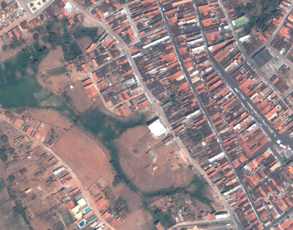
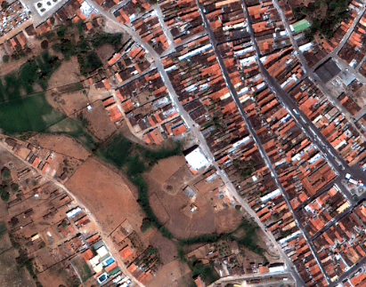

The white balance is an algorithm that adjust the color intensity of an image. It is used to improve photos with whitish, orange, bluish or greenish tones. In this article, I describe an white balance algorithm based on GIMP image editor idea. It is an simple and fast algorithm.
Considering a RGB image in bytes, that is, each pixel varies from 0 to 255, the algorithm is applied on each band separately. The code below should be called for each band in array format. For that, you have to provide the matrix values in sequence, row by row.
WhiteBalanceBand(bandArray) {
// copy the array
sortedBandArray = CopyOf(bandArray)
// sort the array
sortedBandArray = Sort(sortedBandArray)
// percent (configurable) for balance
percentForBalance = 0.6;
// calculate the percentile
perc05 = Percentile(sortedBandArray, percentForBalance)
perc95 = Percentile(sortedBandArray, 100 - percentForBalance)
bandBalancedArray[bandArray.Length]
for(i = 0; i < bandArray.length; i++) {
// calculate balanced value
valueBalanced = (bandArray[i] - perc05) * 255.0 / (perc95 - perc05);
// limit values between 0 and 255
bandBalancedArray[i] = LimitToByte(valueBalanced);
}
return bandBalancedArray;
}
To calculate percentile:
Percentile(array, percentile) {
nArray = array.Length
nPercent = (nArray + 1) * percentile / 100
if(nPercent == 1) {
return array[0];
} else if(nPercent == nArray) {
return array[nArray - 1]
} else {
intNPercent = (int)nPercent
d = nPercent - intNPercent
return array[intNPercent - 1] + d * (array[intNPercent] - array[intNPercent - 1])
}
}
To limit the values between 0 and 255:
LimitToByte(value) { if(value < 0) { return 0 } else if(value > 255) { return 255 } return value }
The images below show the result of applying this algorithm. On the left, the original image without any filters and on the right, the image after applying white balance using the percentile 0.6:
 To implement the white balance, first, let's go to the configurations:
Firstly, we have to import Gdal to the project: in Visual Studio, right click on project, go to "Manage NuGet packages", type "Gdal" on search field, select Gdal (1.11.1 is the last version available at the time of writing) and install it. Also select and install Gdal.Native (the project compile without it but it does not execute correctly). The "GdalConfiguration.cs" class is created automatically. It is used before start the conversion method.
To import Gdal in your class, use:
using OSGeo.GDAL;
Before use the Gdal classes, we need to configure it. You just need to call ConfigureGdal method of the class GdalConfiguration.cs. You can call it, for example, in class constructor.
public WhiteBalance() {
GdalConfiguration.ConfigureGdal();
}
The code below shows the complete implementation of white balance with Gdal, in C#:
new WhiteBalance().AplyWhiteBalance(@"C:\development\input-image.tif", @"C:\development\output-image.tif");
using OSGeo.GDAL; using System; namespace Adadev.GdalModule { public class WhiteBalance { private double percentForBalance = 0.6; public WhiteBalance() { GdalConfiguration.ConfigureGdal(); } public WhiteBalance(double percentForBalance) { this.percentForBalance = percentForBalance; GdalConfiguration.ConfigureGdal(); } public void AplyWhiteBalance(string imagePath, string outImagePath) { using(Dataset image = Gdal.Open(imagePath, Access.GA_ReadOnly)) { Band redBand = GetBand(image, ColorInterp.GCI_RedBand); Band greenBand = GetBand(image, ColorInterp.GCI_GreenBand); Band blueBand = GetBand(image, ColorInterp.GCI_BlueBand); if(redBand == null || greenBand == null || blueBand == null) { throw new NullReferenceException("One or more bands are not available."); } int width = redBand.XSize; int height = redBand.YSize; using(Dataset outImage = Gdal.GetDriverByName("GTiff").Create(outImagePath, width, height, 3, DataType.GDT_Byte, null)) { double[] geoTransformerData = new double[6]; image.GetGeoTransform(geoTransformerData); outImage.SetGeoTransform(geoTransformerData); outImage.SetProjection(image.GetProjection()); Band outRedBand = outImage.GetRasterBand(1); Band outGreenBand = outImage.GetRasterBand(2); Band outBlueBand = outImage.GetRasterBand(3); int[] red = new int[width * height]; int[] green = new int[width * height]; int[] blue = new int[width * height]; redBand.ReadRaster(0, 0, width, height, red, width, height, 0, 0); greenBand.ReadRaster(0, 0, width, height, green, width, height, 0, 0); blueBand.ReadRaster(0, 0, width, height, blue, width, height, 0, 0); int[] outRed = WhiteBalanceBand(red); int[] outGreen = WhiteBalanceBand(green); int[] outBlue = WhiteBalanceBand(blue); outRedBand.WriteRaster(0, 0, width, height, outRed, width, height, 0, 0); outGreenBand.WriteRaster(0, 0, width, height, outGreen, width, height, 0, 0); outBlueBand.WriteRaster(0, 0, width, height, outBlue, width, height, 0, 0); outImage.FlushCache(); } } } public int[] WhiteBalanceBand(int[] band) { int[] sortedBand = new int[band.Length]; Array.Copy(band, sortedBand, band.Length); Array.Sort(sortedBand); double perc05 = Percentile(sortedBand, percentForBalance); double perc95 = Percentile(sortedBand, 100.0 - percentForBalance); int[] bandBalanced = new int[band.Length]; for(int i = 0; i < band.Length; i++) { double valueBalanced = (band[i] - perc05) * 255.0 / (perc95 - perc05); bandBalanced[i] = LimitToByte(valueBalanced); } return bandBalanced; } public double Percentile(int[] sequence, double percentile) { int nSequence = sequence.Length; double nPercent = (nSequence + 1) * percentile / 100d; if(nPercent == 1d) { return sequence[0]; } else if(nPercent == nSequence) { return sequence[nSequence - 1]; } else { int intNPercent = (int)nPercent; double d = nPercent - intNPercent; return sequence[intNPercent - 1] + d * (sequence[intNPercent] - sequence[intNPercent - 1]); } } private byte LimitToByte(double value) { byte newValue; if(value < 0) { newValue = 0; } else if(value > 255) { newValue = 255; } else { newValue = (byte)value; } return newValue; } /** * Returns the band for an color (red, green, blue or alpha) * The dataset should have 4 bands * */ public static Band GetBand(Dataset ImageDataSet, ColorInterp colorInterp) { if(colorInterp.Equals(ImageDataSet.GetRasterBand(1).GetRasterColorInterpretation())) { return ImageDataSet.GetRasterBand(1); } else if(colorInterp.Equals(ImageDataSet.GetRasterBand(2).GetRasterColorInterpretation())) { return ImageDataSet.GetRasterBand(2); } else if(colorInterp.Equals(ImageDataSet.GetRasterBand(3).GetRasterColorInterpretation())) { return ImageDataSet.GetRasterBand(3); } else { return ImageDataSet.GetRasterBand(4); } } } }
You can download the complete code in our repository on Github. See also more details about reading and writting images with Gdal.
Read and Write Images with Gdal in C#
Converting JSON to shapefile using Gdal in C#